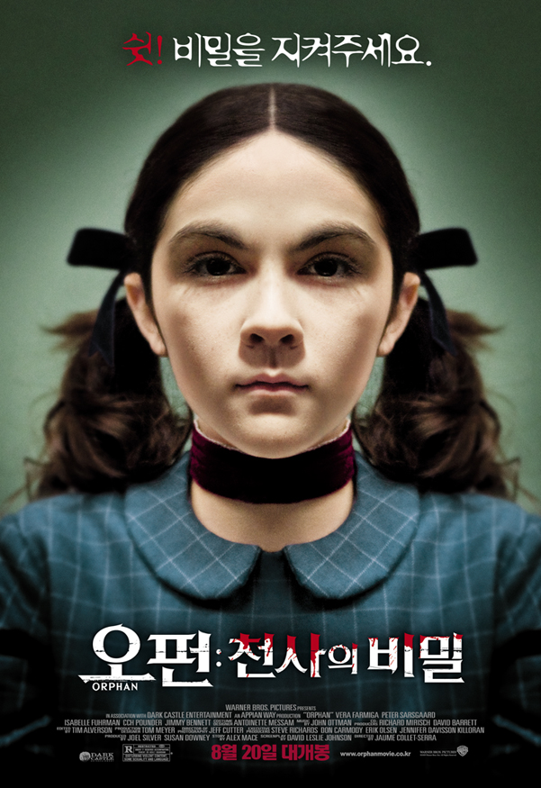

Orphan

유산으로 세 번째 아이를 잃고 고통 받던 케이트와 존은
정상적인 일상을 되찾기 위해 입양을 결심하고 고아원을 찾는다.
거기서 부부는 또래보다 차분하고 영민한 아이 에스터의 신비한 느낌에 이끌려
새 가족으로 받아들이고 큰 아들 대니얼과 어린 딸 맥스까지 다섯 식구의 행복한 삶을 꿈꾼다.
하지만 에스터는 외모와 달리 천사 같은 아이가 아니었다.
에스터가 가족이 된 이후부터 아이들은 뭔가 숨기는 듯 두려워하고
에스터의 오래된 성경책 속에서 정체 모를 사진들을 발견한 케이트는 이상한 기운을 느낀다.
어느 날, 에스터를 괴롭혔던 같은 반 친구가 놀이터에서 떨어지는 사고를 당하고 에스터가 범인으로 지목된다.
한편 입양을 주선한 고아원의 원장수녀가 에스터가 수상하다며 찾아왔다가 실종된 후 처참한 모습으로 숨진 채 발견된다.
에스터를 둘러싼 의문의 사고는 계속되고 대니얼과 맥스까지 위험에 처하게 되자 케이트는 이 아이의 정체에 대한 의문을 품게 된다.
마침내 에스터의 과거를 쫓던 케이트는 생각지도 못했던 충격적인 진실을 알게 되고,
누구도 상상할 수 없는 에스터의 치명적인 비밀은 이제 서서히 가족들을 조여오기 시작하는데…